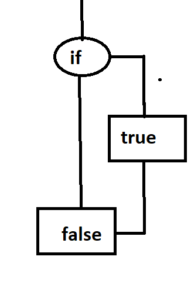

JavaSript
Условные конструкции
Оператор if(...) вычисляет условие в скобках и, если результат true, то выполняет блок кода.

| 1 | var a = 2015 |
| 2 | if (a == 2015) { |
| 3 | alert( "Правильно!" ); |
| 4 | alert( "Вы такой умный!" )}; |
| 5 |
Оператор if может содержать необязательный блок «else» («иначе»). Выполняется, когда условие
ложно.
Иногда, нужно проверить несколько вариантов условия. Для этого используется блок else if.

| 1 | var year = prompt('В каком году появилась спецификация ECMAScript-2015?', ''); |
| 2 | if (year == 2015) { |
| 3 | alert( 'Да вы знаток!' ); |
| 4 | } else { |
| 5 | alert( 'А вот и неправильно!' )}; |
| 6 | |
| 7 |
| 1 | var year = prompt('В каком году появилась спецификация ECMAScript-2015?', ''); |
| 2 | if(year < 2015) { |
| 3 | alert( 'Это слишком рано...' ); |
| 4 | } else if (year > 2015) { |
| 5 | alert( 'Это поздновато' ); |
| 6 | } else { |
| 7 | alert( 'Верно!' ); |
| 8 | }; |